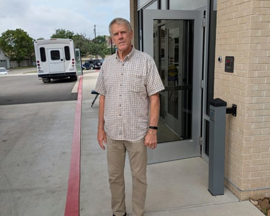
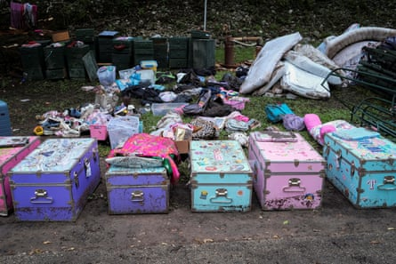

A s search crews were continuing to pick through the wreckage from Friday’s deadly floods in Texas’s Hill Country, mothers on Monday were dropping their teenage children off at Trinity Baptist church in hard-hit Kerrville for camp.
For the past few days, the church had served as a meeting point for families coming to – hopefully – be reunited with children who had attended other camps in the area. One of those was Camp Mystic in Kerr county, which lost more than two dozen campers and counselors during Friday’s deluge. The death toll as of Monday had exceeded 100 across Texas.
And, though that grim number made them nervous and sensitive to the mourning around them, the mothers bringing their daughters to Trinity on Monday said they believed it was important to fight for a return to normalcy amid the devastation.
They also took comfort in the fact that the Trinity summer camp is on a lake and unlikely to experience anything like what had happened days earlier at Camp Mystic and other communities along the Guadalupe River.
One of the women at the church, 26-year-old Brooklyn Thomas, said that some of her core memories as a child had come from camp along the Guadalupe River.
“I’m sure they’ll take some more precautions,” Thomas remarked, contributing to an ongoing discussion about whether public safety alerts sent out ahead of Friday’s flooding reached everyone they needed to reach in time.
Brooklyn Thomas, 26, and Toni Way, 54, at Baptist Trinity church in Texas reflect on the catastrophic flooding.Photograph: Edward Helmore/The Guardian
Thomas was accompanying her mother, Toni Way, to drop Thomas’s sister off at the camp. Way said their instinct to carry on with camp despite what had happened came from something “very deep rooted” within.
“These children’s parents went there when they were kids,” Thomas said. “Every year they send the next generation to camp.”
But scenes of unimaginable heartbreak had also unfolded in the very space where Way and Thomas described their battle to preserve tradition.
Cliff Brown, who had been coordinating the reunification effort at Trinity Baptist, said: “Some have found their children and gone home. Others haven’t.”
Brown said he found hope in how the community had reached out “incredibly” to the families of those who had been lost to offer condolences or whatever assistance they could.
A region unprepared for floods
Way, Thomas and Brown all acknowledged the political discussion surrounding the deadly flooding – about whether Trump administration budget cuts affecting the regional National Weather Service (NWS) office had left the area underprepared.
Government officials, in part, have maintained that warnings of flash flooding were issued in advance. But some residents reported not receiving them – something Texas’s lieutenant governor, Dan Patrick, acknowledged while he appeared on Sunday on Fox News.
Kerr county had looked into installing sirens, river gauges and new communication tools on the Guadalupe River in 2017, the New York Times reported , but the plan was not taken up.
Cliff Brown at Baptist Trinity church in Texas helped coordinate reunification efforts at the church after the catastrophic flooding on the Guadalupe River.Photograph: Edward Helmore/The Guardian
In any event, an initial NWS forecast before Friday’s disaster had called for only 3-6in of rain.
But the remnants of Tropical Storm Barry, combined with other weather systems that stalled in the area, ended up dumping 12in of rain before dawn on Friday. That is estimated to have increased the discharge of the Guadalupe River from 10 cubic feet per second on Thursday to 111,000 cubic feet per second on Friday evening.
Meanwhile, communities along the Guadalupe River became overwhelmed when the river rose 26ft (8 meters) in 45 minutes on Friday morning.
A focal point of the destruction has been Camp Mystic . The nearly century-old, nondenominational Christian institution – which draws many participants from outside the surrounding area – reported the deaths of 27 summer campers and counselors. Among the dead were its director. Authorities later said 10 girls and a counselor were still missing.
It marked an unfathomably dark chapter in the history of a camp that “has always served as a near-flawless training ground for archetypal Texas women”, as the magazine Texas Monthly put it in a 2011 profile of the institution .
Campers’ belongings after the deadly flooding that killed 27 campers and counselors at Camp Mystic and left 10 girls and another counselor missing.Photograph: Marco Bello/Reuters
While Way was sympathetic to the families affected by the horrors at Camp Mystic, she said she had long ago resigned herself to the fact that flooding from the Guadalupe River has been a hazard throughout her life.
The US Geological Survey calculates that the Guadalupe has flooded notably in 1936, 1952, 1972, 1978, 1987, 1991 and 1997. In 1998, it recorded a flood that exceeded 500-year flood projections.
“There’s been so many floods it’s kind of not funny,” Way said.
Neither Way nor her daughter could imagine the Texas Hill Country summer camp tradition being altered no matter what changes Friday’s devastation may spur.
Brown, meanwhile, offered his perspective on how suddenly things devolved.
“No one had any idea the water would rise like it did,” Brown said. “It came up so quickly it caught people off-guard.”